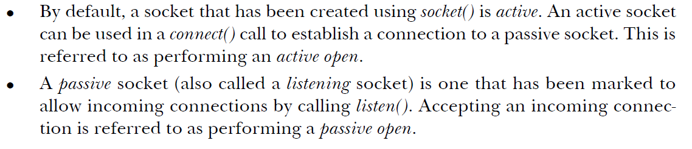

Stream sockets connection is an example of a phone call between
2 persons.
Usually Stream Sockets are referenced as either
Active
or
Passive
:

Stream socket
flow chart
:
depending on the number specified in the backlog the connect can block or get
accepted. if the socket is busy.